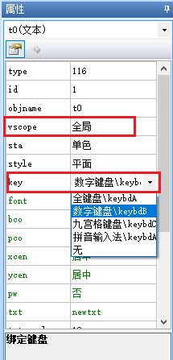
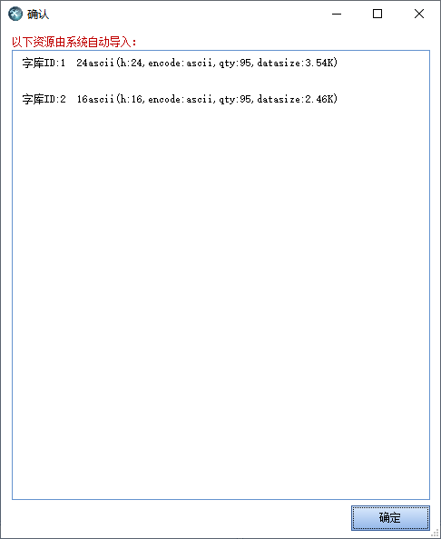
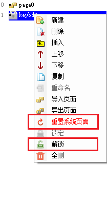
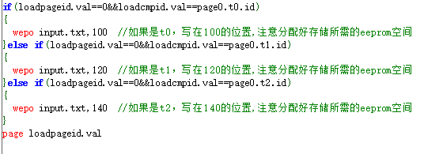

系统键盘
一、系统键盘-概述和调用方式
1、支持系统键盘的控件:文本控件、数字控件、虚拟浮点数控件、滚动文本控件、滑动文本控件。
2、控件调用系统键盘
将控件vscope属性设置为全局，key属性选择相应的键盘。
调用键盘后默认导入相关字库资源文件
注意
键盘是一个独立的页面,调用键盘时,会触发当前页面的<页面离开事件>以及键盘页面的<前初始化事件>和<后初始化事件>
点击键盘的OK按键时,会触发键盘页面的<页面离开事件>以及控件调用页面的<前初始化事件>和<后初始化事件>
二、自定义键盘
在页面窗口最下面页面生成相应键盘界面，默认键盘是上锁的，如果对键盘界面修改或者键盘里面功能进行修改，可以点击页面键盘右键解锁它并做相关的修改。如果不小心对键盘做了不必要的修改，可以右键重置键盘，键盘将会恢复默认键盘最初始的设置状态。
1、进入键盘时自动将输入框清空
提示
其实就是在键盘的后初始化事件中将input.txt和show.txt赋值为空
2、在键盘页面按下OK键时将参数通过串口发送出去
提示
编辑ok按钮的弹起事件,在page指令前添加以下代码
注意
page指令之后的指令是不会被执行的，因为已经跳转到别的页面了。
完整的代码如下
1//调用此页之前，先对此页的loadpageid.val和loadcmpid.val赋值就可以了，其他的逻辑本页会自动实现
2//loadpageid.val表示调用页的页面ID,loadcmpid.val表示调用页的控件ID
3if(p[loadpageid.val].b[loadcmpid.val].type==54)
4{
5 covx input.txt,p[loadpageid.val].b[loadcmpid.val].val,0,0
6}else if(p[loadpageid.val].b[loadcmpid.val].type==59)
7{
8 covx input.txt,temp.val,0,0
9if(temp.val<0)
10{
11 temp.val*=-1
12}
13for(temp2.val=0;temp2.val<p[loadpageid.val].b[loadcmpid.val].vvs1;temp2.val++)
14{
15 temp.val*=10
16}
17p[loadpageid.val].b[loadcmpid.val].val=temp.val
18strlen input.txt,temp.val
19temp.val--
20while(temp.val>=0)
21{
22 substr input.txt,tempstr.txt,temp.val,1
23 if(tempstr.txt==".")
24 {
25 substr input.txt,tempstr.txt,temp.val+1,p[loadpageid.val].b[loadcmpid.val].vvs1
26 covx tempstr.txt,temp2.val,0,0
27 strlen tempstr.txt,temp.val
28 while(temp.val<p[loadpageid.val].b[loadcmpid.val].vvs1)
29 {
30 temp2.val*=10
31 temp.val++
32 }
33 p[loadpageid.val].b[loadcmpid.val].val+=temp2.val
34 temp.val=-1
35 }
36 temp.val--
37}
38substr input.txt,tempstr.txt,0,1
39if(tempstr.txt=="-")
40{
41 p[loadpageid.val].b[loadcmpid.val].val*=-1
42}
43}else
44{
45 p[loadpageid.val].b[loadcmpid.val].txt=input.txt
46}
47if(loadpageid.val==0&&loadcmpid.val==page0.n0.id)
48{
49 printh 55 00 //先发送一个帧头，用来告诉下位机这个是n0
50 covx input.txt,sys0,0,0
51 prints sys0,0 //发送输入框内的数据
52 printh 0d 0a //发送帧尾
53}else if(loadpageid.val==0&&loadcmpid.val==page0.n1.id)
54{
55 printh 55 01 //先发送一个帧头，用来告诉下位机这个是n1
56 covx input.txt,sys0,0,0
57 prints sys0,0 //发送输入框内的数据
58 printh 0d 0a //发送帧尾
59}else if(loadpageid.val==0&&loadcmpid.val==page0.n2.id)
60{
61 printh 55 02 //先发送一个帧头，用来告诉下位机这个是n2
62 covx input.txt,sys0,0,0
63 prints sys0,0 //发送输入框内的数据
64 printh 0d 0a //发送帧尾
65}
66page loadpageid.val
3、不同控件在系统键盘设置好参数存储到用户存储区
提示
编辑ok按钮的弹起事件,在page指令前添加以下代码
完整代码如下
1//调用此页之前，先对此页的loadpageid.val和loadcmpid.val赋值就可以了，其他的逻辑本页会自动实现
2//loadpageid.val表示调用页的页面ID,loadcmpid.val表示调用页的控件ID
3if(p[loadpageid.val].b[loadcmpid.val].type==54)
4{
5 covx input.txt,p[loadpageid.val].b[loadcmpid.val].val,0,0
6}else if(p[loadpageid.val].b[loadcmpid.val].type==59)
7{
8 covx input.txt,temp.val,0,0
9if(temp.val<0)
10{
11 temp.val*=-1
12}
13for(temp2.val=0;temp2.val<p[loadpageid.val].b[loadcmpid.val].vvs1;temp2.val++)
14{
15 temp.val*=10
16}
17 p[loadpageid.val].b[loadcmpid.val].val=temp.val
18 strlen input.txt,temp.val
19 temp.val--
20 while(temp.val>=0)
21{
22 substr input.txt,tempstr.txt,temp.val,1
23 if(tempstr.txt==".")
24 {
25 substr input.txt,tempstr.txt,temp.val+1,p[loadpageid.val].b[loadcmpid.val].vvs1
26 covx tempstr.txt,temp2.val,0,0
27 strlen tempstr.txt,temp.val
28 while(temp.val<p[loadpageid.val].b[loadcmpid.val].vvs1)
29 {
30 temp2.val*=10
31 temp.val++
32 }
33 p[loadpageid.val].b[loadcmpid.val].val+=temp2.val
34 temp.val=-1
35 }
36 temp.val--
37}
38substr input.txt,tempstr.txt,0,1
39if(tempstr.txt=="-")
40{
41 p[loadpageid.val].b[loadcmpid.val].val*=-1
42}
43}else
44{
45 p[loadpageid.val].b[loadcmpid.val].txt=input.txt
46}
47if(loadpageid.val==0&&loadcmpid.val==page0.n0.id)
48{
49 covx input.txt,sys0,0,0
50 wepo sys0,10 //如果是n0，写在10的位置
51}else if(loadpageid.val==0&&loadcmpid.val==page0.n1.id)
52{
53 covx input.txt,sys0,0,0
54 wepo sys0,14 //如果是n1，写在14的位置
55}else if(loadpageid.val==0&&loadcmpid.val==page0.n2.id)
56{
57 covx input.txt,sys0,0,0
58 wepo sys0,18 //如果是n2，写在18的位置
59}
60page loadpageid.val
注意
page指令之后的指令是不会被执行的，因为已经跳转到别的页面了。
②存储变量类型为txt
完整的代码如下
1//调用此页之前，先对此页的loadpageid.val和loadcmpid.val赋值就可以了，其他的逻辑本页会自动实现
2//loadpageid.val表示调用页的页面ID,loadcmpid.val表示调用页的控件ID
3if(p[loadpageid.val].b[loadcmpid.val].type==54)
4{
5 covx input.txt,p[loadpageid.val].b[loadcmpid.val].val,0,0
6}else if(p[loadpageid.val].b[loadcmpid.val].type==59)
7{
8 covx input.txt,temp.val,0,0
9if(temp.val<0)
10{
11 temp.val*=-1
12}
13for(temp2.val=0;temp2.val<p[loadpageid.val].b[loadcmpid.val].vvs1;temp2.val++)
14{
15 temp.val*=10
16}
17p[loadpageid.val].b[loadcmpid.val].val=temp.val
18strlen input.txt,temp.val
19temp.val--
20while(temp.val>=0)
21{
22 substr input.txt,tempstr.txt,temp.val,1
23 if(tempstr.txt==".")
24 {
25 substr input.txt,tempstr.txt,temp.val+1,p[loadpageid.val].b[loadcmpid.val].vvs1
26 covx tempstr.txt,temp2.val,0,0
27 strlen tempstr.txt,temp.val
28 while(temp.val<p[loadpageid.val].b[loadcmpid.val].vvs1)
29 {
30 temp2.val*=10
31 temp.val++
32 }
33 p[loadpageid.val].b[loadcmpid.val].val+=temp2.val
34 temp.val=-1
35 }
36 temp.val--
37}
38substr input.txt,tempstr.txt,0,1
39if(tempstr.txt=="-")
40{
41 p[loadpageid.val].b[loadcmpid.val].val*=-1
42}
43}else
44{
45 p[loadpageid.val].b[loadcmpid.val].txt=input.txt
46}
47if(loadpageid.val==0&&loadcmpid.val==page0.t0.id)
48{
49 wepo input.txt,100 //如果是t0，写在100的位置,注意分配好存储所需的eeprom空间
50}else if(loadpageid.val==0&&loadcmpid.val==page0.t1.id)
51{
52 wepo input.txt,120 //如果是t1，写在120的位置,注意分配好存储所需的eeprom空间
53}else if(loadpageid.val==0&&loadcmpid.val==page0.t2.id)
54{
55 wepo input.txt,140 //如果是t2，写在140的位置,注意分配好存储所需的eeprom空间
56}
57page loadpageid.val
注意
page指令之后的指令是不会被执行的，因为已经跳转到别的页面了。
4、其他跳转到键盘页面的方法
page到键盘页之前，先对键盘页的loadgageid.val和loadcmpid.vid赋值就可以了（一般是文本控件或数字控件和弹起或按下事件中进行赋值，页面名.loadpageid.val=dp，页面名.loadcmpid.val=当前控件的id），其他的逻辑会自动实现,loadpageid.val表示调用页的页面ID,loadcmpid.val表示调用页的控件ID,然后调用page 指令跳转到键盘页面即可
三、系统键盘页面常用控件和变量说明
①变量loadpageid.val表示调用页的页面ID。
②变量loadcmpid.val表示调用页的控件ID。
③定时器tm0是让输入框有个光标不断闪烁，如果不需要，控件属性en=0即可。
④变量inputlenth获取正在使用系统键盘控件字符最大长度。
⑤变量input表示输入的数据。
⑥文本show表示键盘显示的数据,主要目的是为了让输入框有个闪烁的效果。
四、系统键盘使用过程中常见问题
1.系统键盘无法用输入法打出汉字
可能原因1：工程设备字符编码设置为utf-8，utf-8不支持输入法打出汉字
解决办法：将工程设备字符编码设置非为utf-8字符编码。
可能原因2：输入法键盘没有切换成输入法
解决办法：将系统键盘切换成中文输入法，点击底部的“中/英”切换按钮。
可能原因3：输入的字符无法拼音构成汉字，例：”www”
解决办法：输入的字符为拼音可构成汉字。例：”wen”，”ni”。
2.系统键盘无法输入字符
可能原因：在调用键盘前读取了eeprom中的数据，eeprom并没有初始化，里面存储随机值中有非法字符导致输入框被填满且无法显示。
解决办法：让设备第一次开机通过代码对eeprom进行一次初始化
1 repo restFlag1,0 //请提前在program.s中定义restFlag1
2 repo restFlag2,4 //请提前在program.s中定义restFlag2
3 if(restFlag1!=0x01234567||restFlag2!=0x76543210)
4 {
5 wepo 0x01234567,0
6 wepo 0x76543210,4
7 for(sys0=12;sys0<=1020;sys0+=4)
8 {
9 wepo 0,sys0
10 }
11 }
可能原因：修改键盘部分代码，导致键盘功能失效了。
解决办法：在页面窗口，右键系统键盘页面重置系统页面。
3.控件调用系统键盘输入值后，控件又回到默认值
可能原因：数据输入时是通过切换页面调用系统键盘，当输入完数据会再次回到控件的页面，此时会再次执行页面初始化事件，初始化事件的赋值会对控件重新赋值，这样就会好像控件回到默认值（复位）一样，导致调用系统键盘给控件赋值无效。
解决办法：
①不要在此控件页面初始化事件里给控件赋初始值，可以专门做一个用来上电赋初始值的页面，做为上电默认页，在此页面的初始化事件里完成所有的初始化动作之后，再切换到工程主页，这样初始化动作就只会上电执行一次，不会重复执行。
②在数据输入页面建一个变量（设置全局），用来表示是否已经初始化过了，赋初始值的时候判断控件是否已经被初始化过，是的话就不要再赋初值了，这样键盘调用完之后再次回来就不会重复执行了。
4.控件调用系统键盘输入值后，其他控件又回到默认值
可能原因：数据输入时是通过切换页面调用系统键盘，切换页面的时候其他控件vscope设置为私有会释放内存，恢复为默认值。若其他控件不想恢复默认值，将它的vscope属性设置为全局就好了。